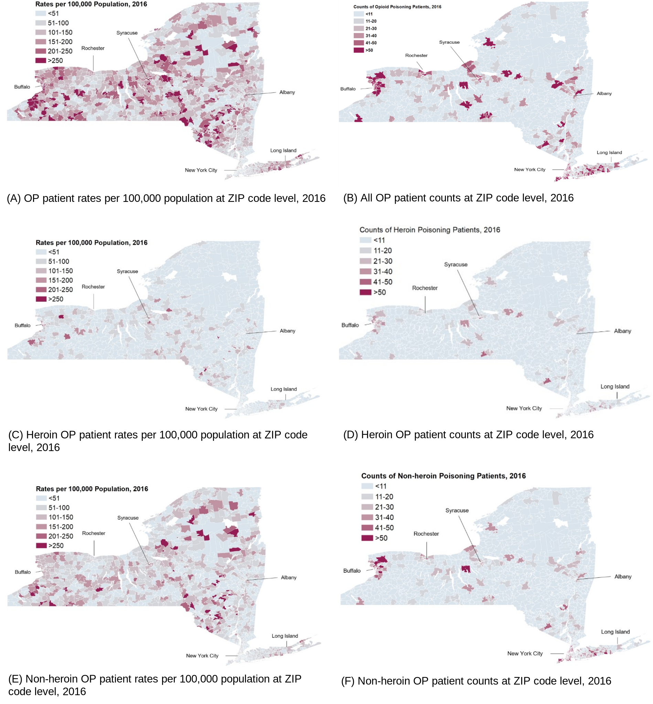
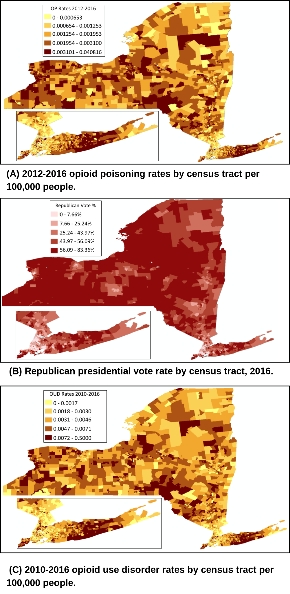
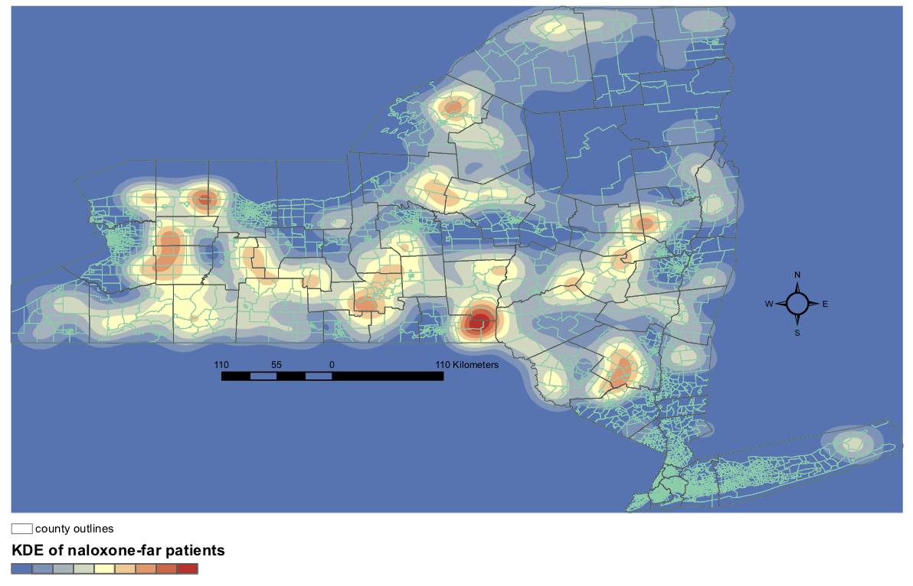

Public health studies are moving towards Public Health 2.0 and Precision Public Health,
driven by the availability of big data at large scales and finer geospatial resolutions, including
electronic health records (EHR), user generated data, and consolidated data from multiple data sources.
This offers a compelling opportunity to enhance opioid epidemic studies with improved accuracy for
timely intervention and prevention.
We take a GIS and big spatial data driven approach to study community and region
level patterns and variations at fine spatial resolutions, and the impact of demographic and
socio-economical factors on opioid epidemic. We also discover resource dispartities in NY, which needs to be improved.
Projects:
References:
- Xin Chen, Wei Hou, Sina Rashidian, Yu Wang, Xia Zhao, George Stuart Leibowitz, Richard N Rosenthal, Mary Saltz, Joel H Saltz, Elinor Randi Schoenfeld and Fusheng Wang:
A Large-Scale Retrospective Study of Opioid Poisoning in New York State with Implications for Targeted Interventions.
Scientific Reports 11, 5152 (2021).
- Elinor Schoenfeld, George Leibowitz, Yu Wang, Xin Chen, Wei Hou, Sina Rashidian, Mary M Saltz, Joel H Saltz, and Fusheng Wang:
Geographic, temporal and sociodemographic differences in opioid poisoning.
American Journal of Preventive Medicine. Volume 57, Issue 2, Pages 153–164. 2019.

Association of Opioid Use Disorder With 2016 Presidential Voting Patterns in New York State at Census Tract Level
References:
Anthony Xiang, Wei Hou, Sina Rashidian, Richard N Rosenthal, Kayley Abell-Hart, Xia Zhao and Fusheng Wang:
Association of Opioid Use Disorder With 2016 Presidential Voting Patterns: A Cross-Sectional Study in New York State at Census Tract Level.
JMIR Public Health Surveill 2021;7(4):e23426

Undertanding geospatial disparities of treatment resources for opioid overdose
References:
Kayley Abell-Hart, Sina Rashidian, Dejun Teng, Richard N Rosenthal and Fusheng Wang:
Where Opioid Overdose Patients Live Far From Treatment:
Geospatial Analysis of Underserved Populations in New York State.
In press. JMIR Public Health and Surveillance.
